El mar Pacífico es frío y puede ser muy profundo y sus costas son más secas que las del Golfo y el Caribe.Aquí viven una gran cantidad de plantas y animales marinos y muchos otros en las islas y en las costas.Hay animales microscópicos y tan grandes como las ballenas.
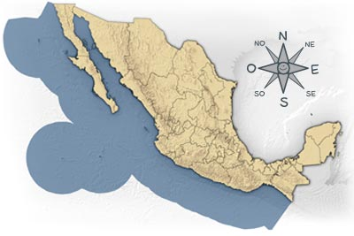
Bobo de Patas Azules
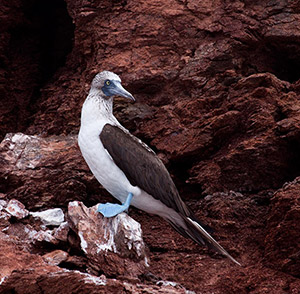
Soy un ave marina, también conocida como alcatraz. Me alimento de peces que atrapo echándome un gran clavado como flecha desde el aire. Para anidar nos reunimos en grandes colonias en islas rocosas.
Tortuga Carey
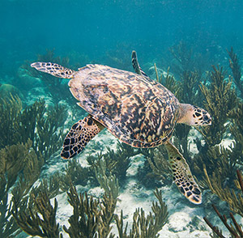
Soy una de las siete tortugas marinas que viven en México. Me reconoces por mi trompa que tiene forma de pico de halcón y en mis aletas puedes ver un par de garras. Me alimento de esponjas de mar, medusas, estrellas de mar y erizos. Mi caparazón de color ámbar ha sido muy utilizado para hacer diversas artesanías.
Ballena Azul
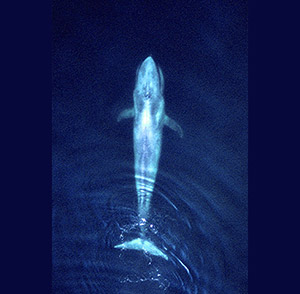
Soy el mamífero más grande del planeta y uno de los animales de mayor tamaño que jamás haya existido. Soy solitaria y me alimento de pequeños camaroncitos. ¡Imagínate cuantos millones me como cada vez que abro la boca! Mis bebés toman alrededor de 400 litros de leche todos los días que es más o menos toda la leche que tú te tomas en dos años y un mes.
Corales
Aunque no lo parecemos, somos animales coloniales. Si nos ves de cerca te darás cuenta que estamos formados por miles de pequeños animalitos llamados pólipos. Somos carnívoros y nos alimentamos de animales aún más pequeños que nosotros, conocidos como zooplancton. Hazte para allá... No, tú hazte para allá.
Cangrejo de Roca
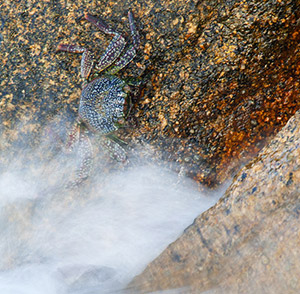
Soy pariente de camarones y langostas. Vivo en la orilla del mar entre las rocas. Me alimento de algas y de pequeños animalitos. Mi caparazón, me da protección pero para crecer tengo que salir de él y producir otro, me gusta estar a la moda siempre cambiando de ropa. A veces puedes encontrar nuestros trajes vacíos colgados de una roca.
Estrella de Mar
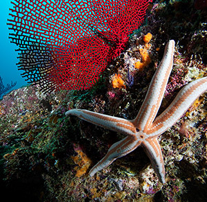
Soy pariente del erizo de mar. Camino muy despacito sobre las rocas y sobre la arena. Me alimento de almejas y ostiones, corales, peces y cangrejos. Si pierdo alguno de mis brazos puedo hacerlo crecer de nuevo. Es increíble... ¿verdad?
Tortuga Laúd
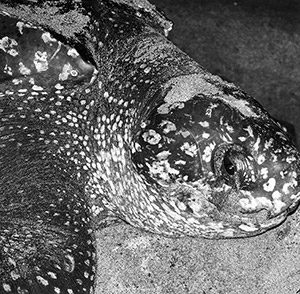
Soy la más grande de las tortugas marinas. Puedo alcanzar más de dos metros de largo. Me reconoces fácilmente por mi caparazón que tiene cinco crestas. Me alimento casi exclusivamente de medusas. Mis tortuguitas corren mucho peligro cuando salen del nido ya que hay muchos animales que se las quieren comer. ¡Ayúdame a protegerlas!
Ballena Jorobada
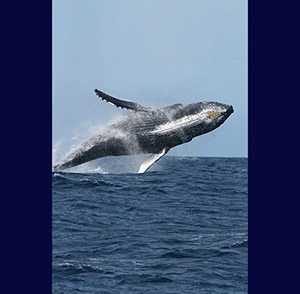
Soy una ballena muy divertida. Me encanta saltar fuera del agua. Los machos producen un canto muy interesante. ¿Lo has escuchado? Puedo vivir en grupos o andar solitaria. Al igual que la Ballena Azul, me encantan los camaroncitos, pero también como pececitos.
Caracol Púrpura
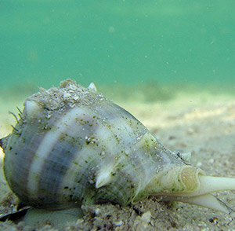
Soy un caracol carnívoro. Vivo entre las rocas que están a la orilla del mar. Me alimento de otras especies de caracoles, quitones y lapas. Produzco un líquido de color púrpura que ha sido utilizado para teñir textiles o telas desde tiempos prehispánicos.
Erizo de Tinta
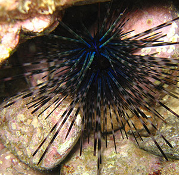
Soy pariente de las estrellas de mar. Tengo grandes espinas de color morado y me alimento de las algas que crecen sobre los corales. Cuando no tengo depredadores dejo los platos limpiecitos. ¡Mmmmhhh!
Vaquita Marina
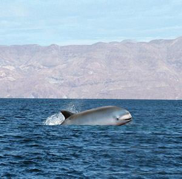
Soy una marsopa, pariente de los delfines y ballenas. Soy la más pequeña de toda la familia y la más tímida. Mi hogar es muy restringido. Solamente vivo en una región muy pequeña en el extremo norte del Golfo de California. Me alimento de peces y calamares.
Mantarraya Gigante
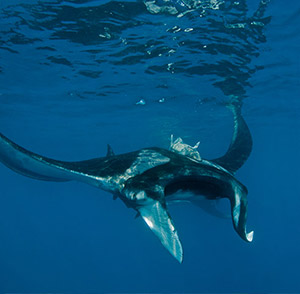
Soy un gran pez plano pariente de los tiburones. Me alimento de plancton, que son animales y plantas microscópicas que flotan en el agua. Con tan sólo abrir la boca me como miles de ellos. A veces salto fuera del agua.
Tortuga Caguama
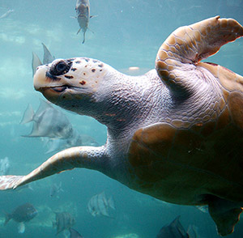
También me conocen como tortuga amarilla o cabezona. Después de la Tortuga Laúd soy una de las tortugas marinas más grandes. Me alimento de caracoles, cangrejos y peces. Hago un largo viaje de 12,000 km desde Japón a Baja California.